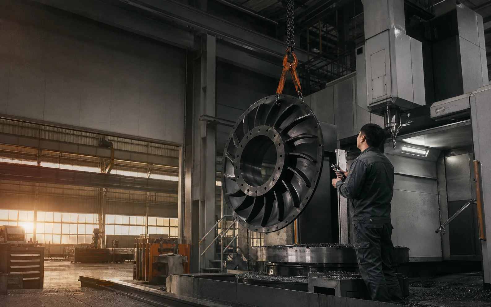
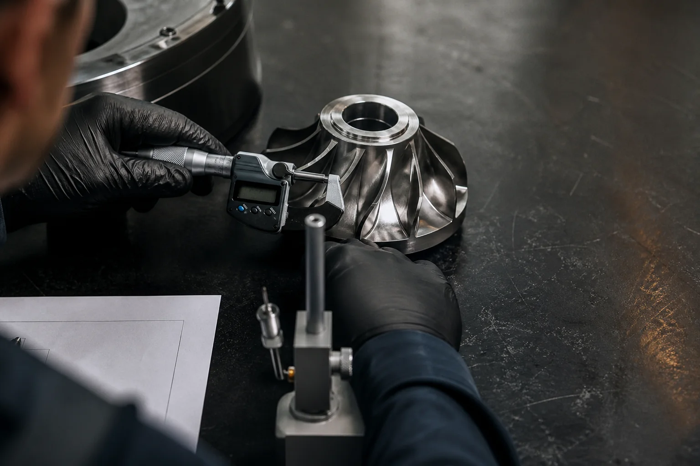

Critical rotating componentsIncheon / KR
Parts that
hold the line.
Five-axis machining and inspection evidence for programs where the drawing is only the beginning.

Built around evidence
- AS9100D workflow
- Full material trace
- FAI + CMM report
- Serialized lot records
01 / Process fit
Select the work.
Read the limit.
Representative planning ranges for first-pass supplier evaluation. Final capability follows drawing and material review.
High-load concentric geometry
Impellers + blisks
Five-axis roughing and finishing with controlled datum transfer for nickel, titanium, and stainless rotating parts.
- Typical envelope
- Ø 80–1,600 mm
- Profile tolerance
- ±0.008 mm
- Inspection
- 5-axis CMM + scan
- Lot pattern
- 1–24 serialized

02 / Evidence chain
A tolerance claim is not a report.
Every critical characteristic is linked to material identity, operation, instrument, operator, and revision. You receive the evidence package your release process needs—not a folder of unlabeled PDFs.
- Material
- Heat + lot trace Linked
- Geometry
- Ballooned drawing Mapped
- Measurement
- CMM raw + report Versioned
- Release
- FAI / CoC package Signed
03 / Controlled handoff
Four gates.
One accountable record.
- 01Target 48 h
Drawing review
CTQs, datum strategy, material, and inspection scope returned with open questions.
- 02DFM record
Process proof
Tool access, workholding, deformation risk, and measurement method locked before release.
- 03FAI package
First article
Operation-level trace and dimensional evidence reviewed against the approved revision.
- 04Lot archive
Repeat control
Serialized records and change history stay connected across every production lot.
04 / Prepare the handoff
Make the first review useful.
Build a local brief before sharing controlled files. This prototype does not upload or transmit data.